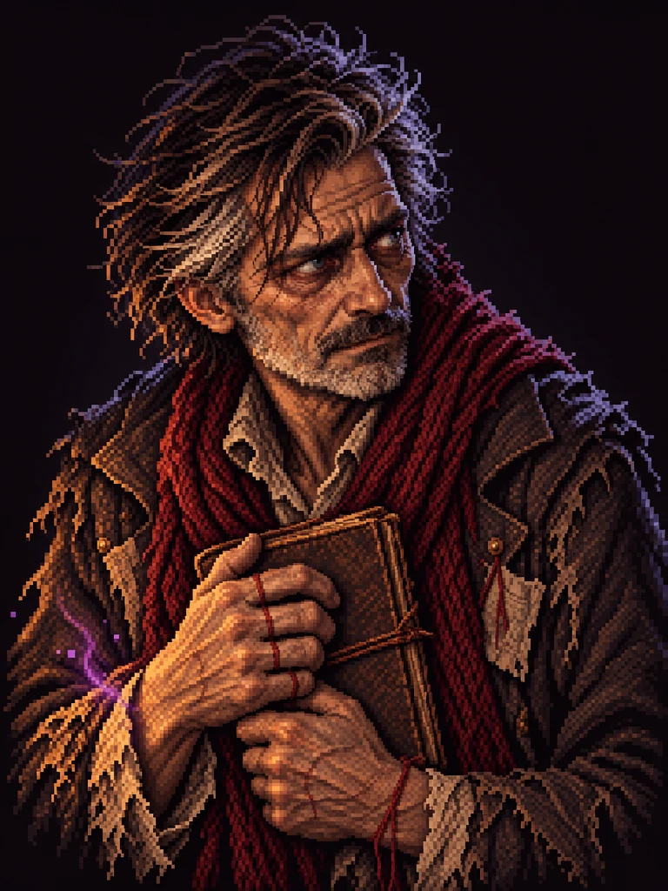
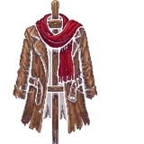
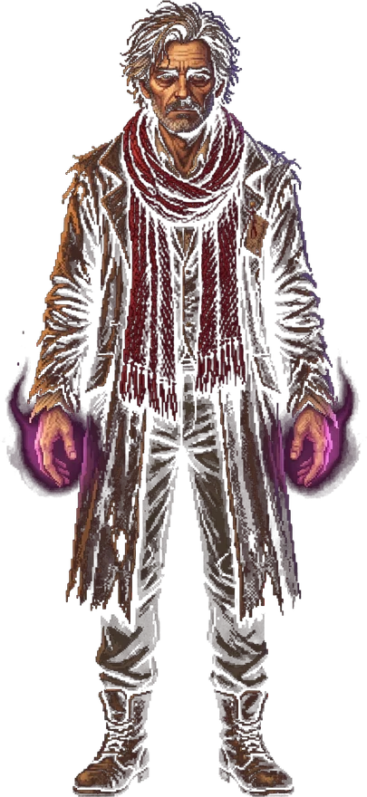

Филипп
…и ещё одна долгая ночь
Филипп
Хиты
/
КД
Шаг
Иниц.
Обычный
Преимущество
Помеха
Последние броски
🎲 Честность кубика ›
Общение
Харизма
· мастерство
Обычный
Преимущество
Помеха
Предметы
для разговора
выбрать ›
Языки
Бой
как устроен ход ›
Обычный
Преимущество
Помеха
Действие
все заклинания ›
Реакция и бонусное действие
Запасы
Инвентарь
+ предмет
Всё
Разговор
Бой
Магия

Экипировка
